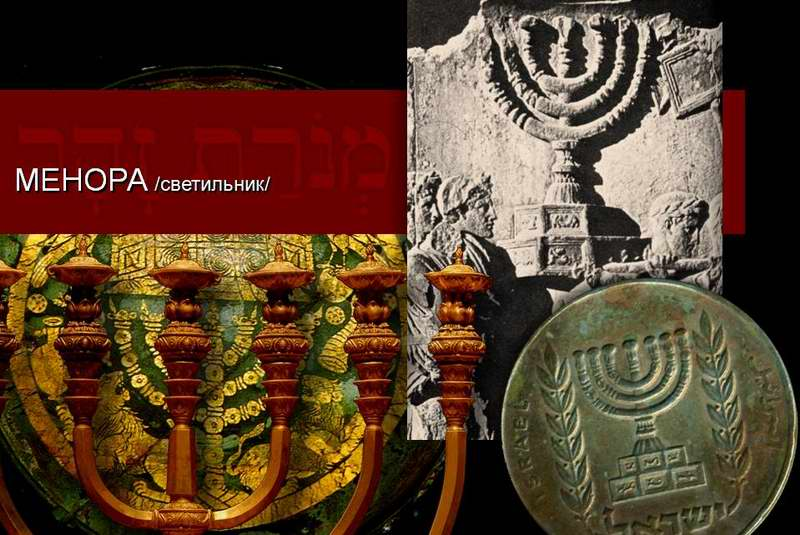
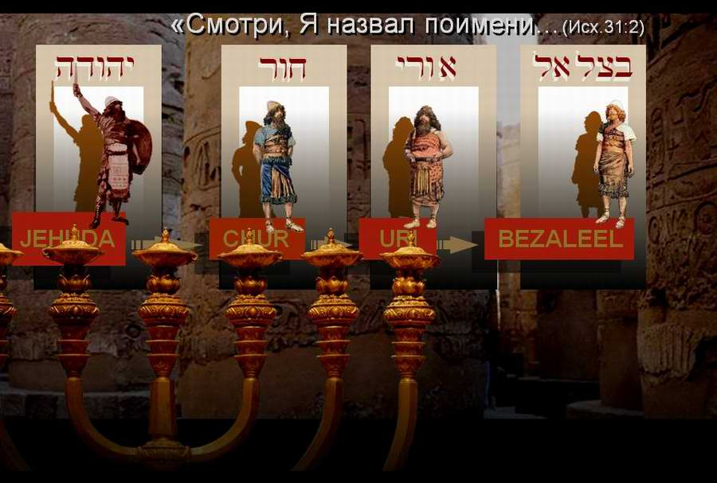
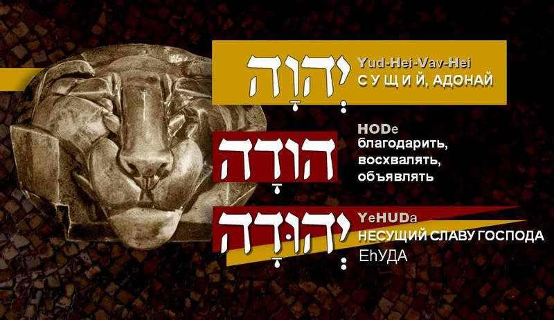
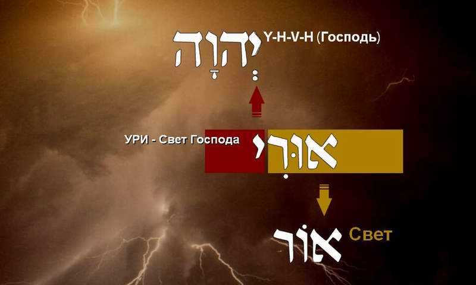
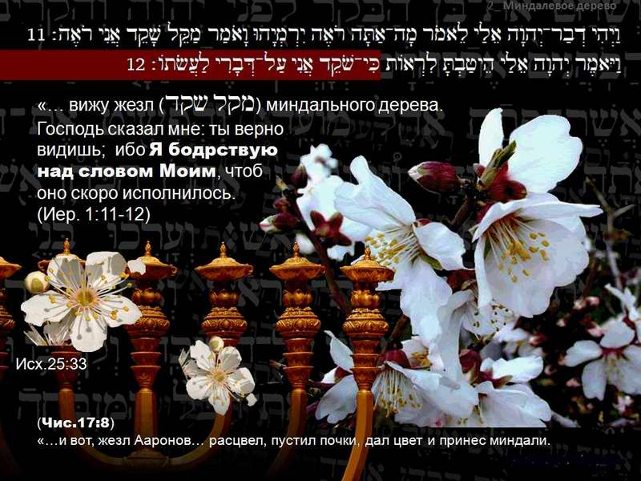

The Menorah: Symbol of the Bezalel School
Let us talk about the MENORAH (Exod. 25:31–37), the best-known work of the first Israelite artist, Bezalel. This lampstand can be called the hallmark of the whole Bezalel School. Making it was a difficult task of "converting" heavenly reality into material images that the community of Israel could understand. The lampstand was to show forth the glory of the Most High. Only an artist called and gifted by the Eternal One Himself could make it.
The Menorah, symbol of the Bezalel School. This film looks at Bezalel's key work, the lampstand for the sanctuary (the seven-branched lampstand). Like a drop of water, it reflects the essence of all Bezalel's creative work and of the School of creativity he founded.
Torah-Art studio, TORAART.com. Ephraim Kalish: THE SCHOOL OF BEZALEL. Yaroslavl, 2013.
An ancient symbol
The menorah is perhaps the best known of all Jewish symbols, and the most ancient. The other symbol directly associated with Israel and the Jewish people, the Magen David ("shield of David", better known as the "star of David"), is of much later origin. These two symbols are the state symbols of Israel today: the star of David on the country's flag, the menorah on its emblem.
Many images of the MENORAH, from antiquity to our own day, can be found on stone reliefs, mosaics, coins and the stained glass of Christian cathedrals and synagogues.

The menorah on the Arch of Titus is the oldest image of it, and it is the only one of all Bezalel's works, made about 3,500 years ago, that has come down to us.
The artist Bezalel needed all his wisdom, skill, knowledge and understanding to carry out exactly what God commanded him through Moshe. Even for Moshe this task was not an easy one. The midrash speaks of Moshe's perplexity when the Most High showed him the heavenly Mishkan (Tabernacle).
The difficulty was that a heavenly reality which a person cannot convey in words had to be "converted" into material images that the community of Israel could understand. The intended purpose of the lampstand was to show forth the glory of the Most High (the Shekhinah), and Moshe could not grasp how exactly this could be done. The midrash says that the Most High, speaking with Moshe on Mount Sinai, showed him a fiery menorah in a vision. Refined gold that Moshe put into the fire was turned into the seven-branched lampstand by the power of the Most High.
Only after the work of setting up the Mishkan was finished did the Israelites begin to make the lampstand.
It is no accident that the Creator called an artist able to carry out His design. For this purpose the Most High filled him with His Spirit in wisdom, knowledge and understanding. He also gave him talents in all the crafts needed for it. And what was impossible for man became possible in co-creation with the Creator of the universe.
The MENORAH reflected in Bezalel's name

The message contained in the menorah is reflected in the name of Bezalel, the master who made it.
The Most High's calling of Bezalel by name (see Exod. 31:1–2) can also be understood as the calling of his forefathers, from Yehudah to his grandfather Hur and his father Uri. In His foreknowledge the Most High Himself called by name, that is, gave names to Bezalel's ancestors and to him. Like a skilful weaver He wove his whole genealogy, determining his calling from the beginning.
The One who called him by name also showed Moshe the pattern of the heavenly things and the heavenly menorah He had made. From the beginning the Most High knew both the actions and their purpose. He put an important message, a perfect law, into Bezalel's name. He knew how the image of the heavenly menorah, carrying the qualities of the sculptor himself, would come from the hands of the artist He had chosen. Just as every work of art bears its maker's fingerprints, so the menorah carries a part of Bezalel's personality.
He himself and his genealogy are imprinted in this work.
Yehudah: head of the tribe in which Bezalel's family arose
The whole lampstand was a radiance and a symbol of the glory of the LORD. The name Yehudah, "bearing the glory of God", speaks of it.
The seven branches of the lampstand point to divine perfection and fullness: the divine Sabbath.

Hur: Bezalel's grandfather
The name Hur means "cleansed". The menorah was made of refined gold, gold "tried" by fire. The pure beaten oil used in the lampstand, obtained from the best, specially chosen olives, also points to the artist's grandfather.
And the fact that the menorah is a special altar in the Tabernacle, together with the table and the altar of incense, refers us to the artist's grandfather, who, according to tradition, gave his life on the altar for the name of the LORD, having resolved to stay faithful to the One who called him to the end.
Of the oil it is said that it must be זך [ZAKH], "pure", "clear". Only a spirit that is enlightened, cleansed of the "admixtures" of base passions, becomes able to commune with the Spirit of the LORD.
There is one more necessary quality of the oil in Scripture: כתית [KATIT], "beaten", from the verb כתת [KATAT], "to beat", "to crush". By many "blows", sufferings and trials, our spirit is prepared for communion with God. This image can be seen as parallel to the "contrite spirit" and "contrite heart" (see Isa. 57:15).

Uri: the artist's father
The name Uri means "light of the LORD". So Bezalel is a son of the light of the LORD, that is, one born of the Spirit of the LORD and enlightened by His light, the light that was always to shine from the seven-branched lampstand.

The name Bezalel
The name Bezalel means "in the likeness of God", and it is reflected in the idea of the lampstand, a symbol and a kind of image of God. The Most High put into the artist the wisdom to enter into His design, and gave him the understanding to know himself (the law of his name and his calling). He is the One who put into his heart the knowledge to teach others.

The idea of the menorah
The almond tree
The menorah is made in the likeness of an almond tree, as a visible symbol of the word of the LORD. It is the almond that the Most High points to as the symbol of His watching over His word. As on Aaron's rod, the menorah combines flower, bud and fruit, which together point to the divine fullness and perfection of His word.

The vision of the prophet Yirmeyahu
11 Moreover the word of the LORD came unto me, saying, Yirmeyahu, what seest thou? And I said, I see a rod of an almond tree.
12 Then said the LORD unto me, Thou hast well seen: for I will watch over My word to perform it.
(Jer. 1:11–12)
11 וַיְהִי דְבַר־יְהוָה אֵלַי לֵאמֹר מָה־אַתָּה רֹאֶה יִרְמְיָהוּ וָאֹמַר מַקֵּל שָׁקֵד אֲנִי רֹאֶה׃
12 וַיֹּאמֶר יְהוָה אֵלַי הֵיטַבְתָּ לִרְאוֹת כִּי־שֹׁקֵד אֲנִי עַל־דְּבָרִי לַעֲשֹׂתוֹ׃
So Yirmeyahu himself becomes convinced that the Almighty, having spoken a word, watches over it so that it is fulfilled exactly.
The LORD's encouragement was extremely important for the young prophet. For in calling him, the Most High warned him in advance that the words of his prophecy would not be received. "Even though they will not listen to you, your service is to speak the words that I command you. I am the LORD, and I watch over My word to perform it!"
God likened Bezalel to the lampstand. Like the menorah filled with oil, Bezalel was filled with the Spirit of God.
Not only was the artist reflected in his work; the menorah too (for it is a spiritual reality) was reflected in his life. It made him what he became: a lampstand giving out its light of teaching through creative work.
The menorah is the "calling card", the concentrated expression of the approach to creativity in the Bezalel School (after calling him to service, God commands Bezalel to found a school). This lampstand is the School's key work, containing its teaching. The heavenly menorah lit up Bezalel's destiny and his service to the Eternal One. This matters for us today too, so that our creative work may be a gleam of its light, a reflection…
Author: Ephraim Kalish / Torah-Art
Read also on this subject:
BEZALEL, SON OF LIGHT. The Calling, part I
BEZALEL, SON OF LIGHT. Under the Shelter of the Most High, part II
BEZALEL, SON OF LIGHT. The Light of the LORD, part III
BEZALEL, SON OF LIGHT. Grandfather HUR, part IV
BEZALEL, SON OF LIGHT. One Who Glorifies God, part V
Called to Be Refined. Bezalel's Grandfather, HUR
The School of Bezalel. The Calling to Teach
The School of Bezalel. The Parent
The School of Bezalel. A Teacher's Heart
His Hands Were Faith (Exod. 17:12). The Artist and Faith
The Sanctuary: Mishkan and Mikdash
Bezalel. The Menorah, Sign of the School
A Direct Hit on the Target
 The Sanctuary: Mishkan and Mikdash
The Sanctuary: Mishkan and Mikdash Bezalel. Grandfather Hur
Bezalel. Grandfather Hur Different Understandings
Different Understandings